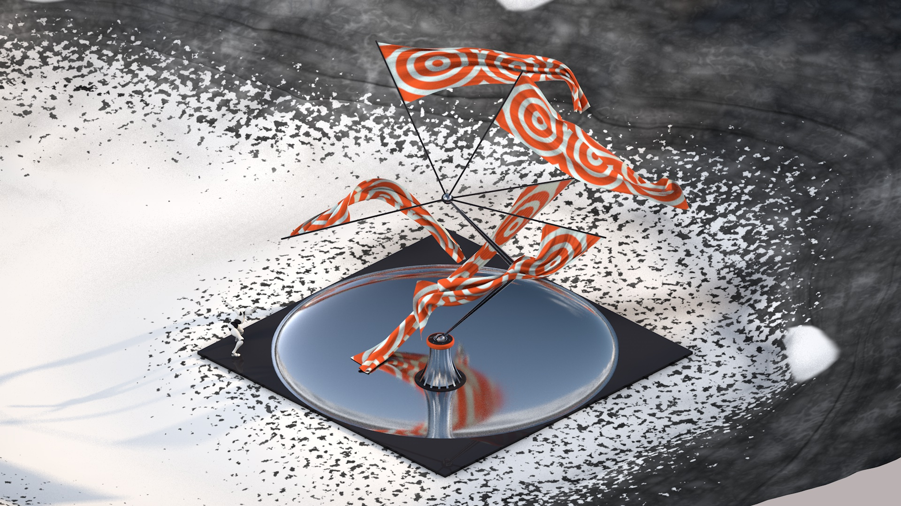
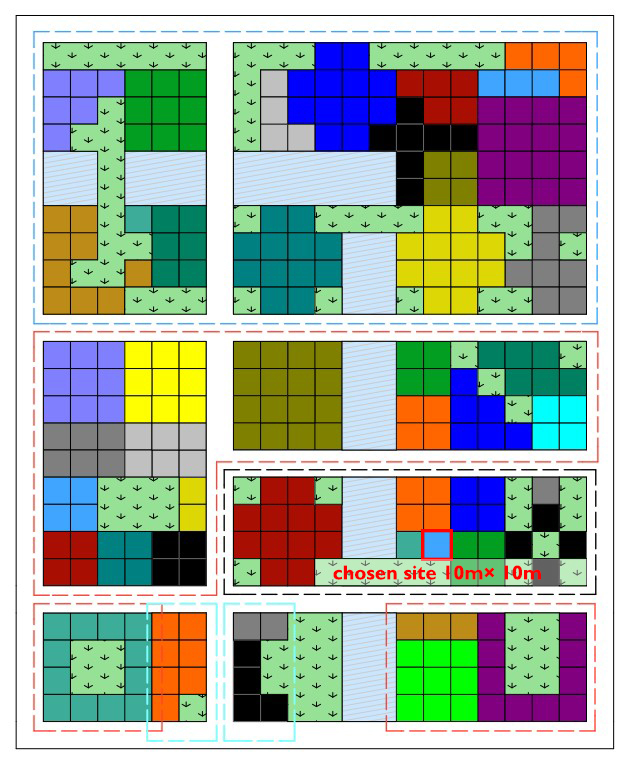

Keywords: kinetic sculpture, C4D rendering
[Group Work] Individual
[Time] October, 2020

+Description
The Wind Shaper, a kinetic sculpture that consists of a machine arm and five huge flags, is choreographed to wave elegantly and generate wind in the “City of Wonders”. To play with the sculpture, a humanoid robot is moving mechanically, in contrast to the ‘novel dancer’, brandishing the soft clothes with its rigid arms. The Wind Shaper reshapes the ambient microclimate with aesthetic dancing, like a vibrant inhabitant in the city.
+Video Demonstartion
+Background

It is a C4D modelling task of my programme. Everyone is asked to design an architectural wonder in the “City of Wonders” within the city grid, which is made up of 10m x 10m plots. I chose a single plot to be the site of my kinetic sculpture.